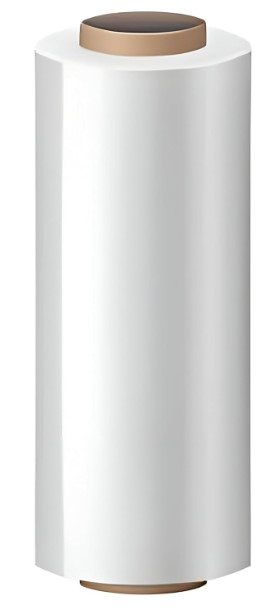
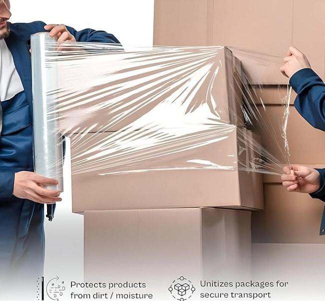
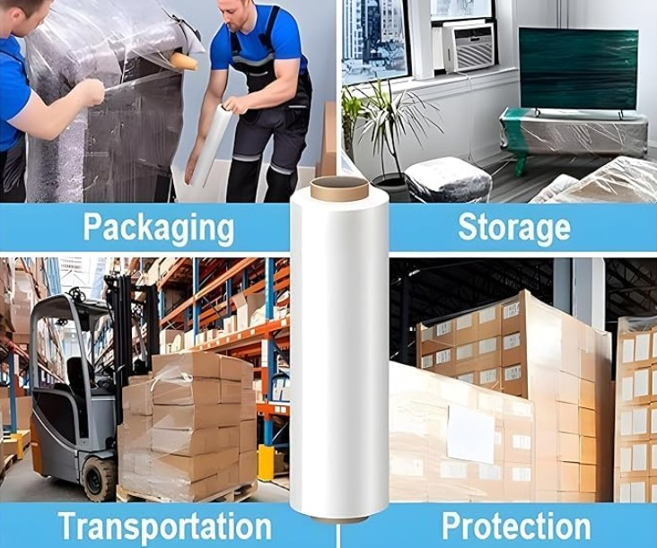
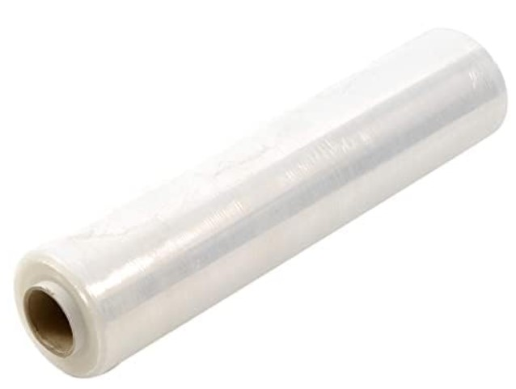
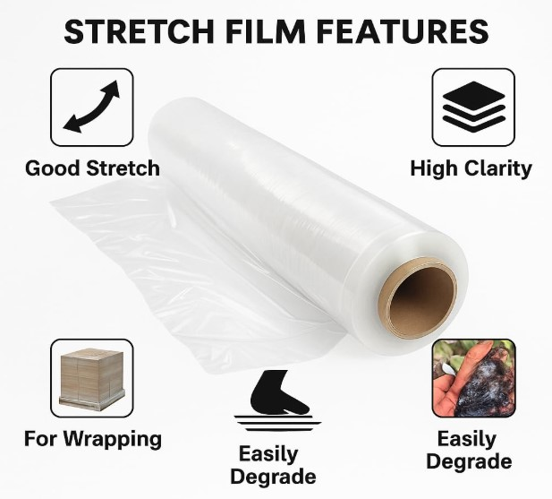

Product Overview
Stretch Film is a highly stretchable plastic film used to
wrap pallets, cartons, and goods to keep them secure and
protected during handling, storage, and transportation.
Manufactured using premium-grade polyethylene, stretch films
offer excellent load-holding force, puncture resistance,
and clarity for easy identification of wrapped goods.
Key Features
- Excellent stretchability and load retention
- High tear and puncture resistance
- Strong cling for secure wrapping
- Transparent for easy product identification
- Reduces damage during transport and storage
Specifications
- Material: LLDPE (Linear Low Density Polyethylene)
- Form: Hand roll / Machine roll
- Thickness: Varies by micron
- Colour: Transparent (black available on request)
- Usage: Packaging and pallet wrapping
Applications & Use Cases
- Pallet wrapping and load stabilization
- Warehouse and logistics packaging
- Industrial goods protection
- Export and transport packaging
- Carton bundling and unitization
Best Suited For
- Warehouses and distribution centers
- Logistics and transport companies
- Manufacturing and assembly units
- Exporters and bulk shippers
Selection Note
For Indian logistics and transport conditions, stretch film
thickness and stretch ratio should be selected based on load
weight and handling frequency. Heavier pallets require higher
micron films with superior load-holding force, while lighter
cartons can be wrapped using thinner films for cost efficiency.
Commonly Used Along With
- Pallets and Skids
- Strapping Belts and Buckles
- Corner Protectors and Packaging Accessories
Product FAQs
-
What is stretch film used for?
Stretch film is used to wrap and secure pallets and
goods, preventing shifting, dust exposure, and damage
during storage and transportation.
-
What is the difference between hand roll and machine roll?
Hand rolls are used for manual wrapping, while machine
rolls are designed for automatic or semi-automatic
pallet wrapping machines.
-
Is stretch film suitable for Indian transport conditions?
Yes. Stretch film is widely used in Indian logistics and
warehousing to stabilize loads during long-distance and
rough transport conditions.
-
How do I select the correct micron thickness?
Micron selection depends on pallet weight, height, and
handling conditions. Heavier and unstable loads require
thicker films with higher stretch strength.
-
Does stretch film protect against dust and moisture?
Stretch film provides good protection against dust and
minor moisture exposure, but it is not a waterproof seal.
-
Are bulk rolls and custom specifications available?
Yes. Stretch films are available in bulk quantities with
custom widths, microns, and roll weights for industrial
and commercial buyers.